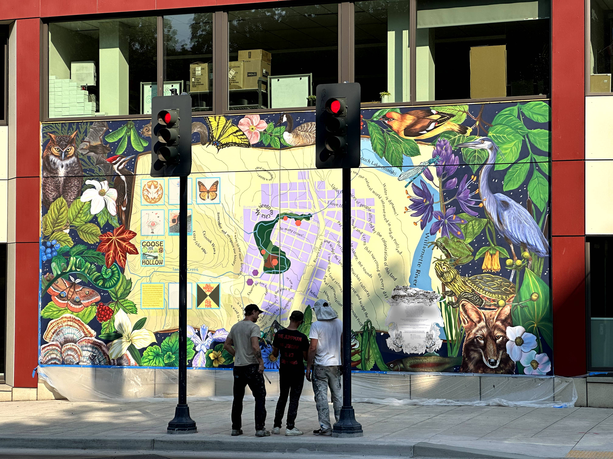

Hidden Portals was a May 2024 event by Library of Congress Innovator in Residence Jeffrey Yoo Warren.

Hidden
Portals
Hello and welcome. I’m Jeffrey Yoo Warren, the 2023-24 Library of Congress Innovator in Residence.
At the sites of 5 historical erased Asian American communities, portals have been hidden in plain sight. When you approach, the portals will open, allowing a glimpse into virtually reconstructed, immersive moments from their pasts.
Providence | Portland | Hanford | Riverside | Truckee and at the Library of Congress
As a part of my residency project, Seeing Lost Enclaves, portals have also been created in and around the Library of Congress in Washington, DC. My collaborators and I have spent the past two years crafting these portals from archival records, photographs, oral histories and other clues. Our experiences sifting through archival clues have also revealed how these stories have been historically hidden.
The worlds we've re-constructed are, by necessity, partial, fleeting and speculative to varying degrees. In the spirit of Saidiya Hartman’s critical fabulation and the speculative fiction of Linda Sue Park, we have focused on the sensory experiences of place – those knowledges most likely to survive by remaining hidden – rather than the dates and historical facts. By placing these portals – these reconstructions of lost enclaves – in unmarked spots, I hope they will resist denials, misunderstandings, exoticizing gazes, and re-displacement, through their insubstantial and ghostly presence, impossible to drive out.
How we got here
Beginning in the 1870s, Chinese Americans across the west coast were violently driven from their homes by racist groups such as the Caucasian League, often with the support or involvement of city officials and courts of law. In my work, I'm seeking to reconnect Asian Americans with a time when we were profoundly unwelcome, but these harms are not the main focus of my work. Rather, by reconstructing the textures and stories of their lives, and immersing ourselves in the worlds of these long-ago communities, we can better understand ourselves and the more just and joyful futures we are crafting today. Each of these sites is also on the land of Native tribes and peoples.
How it works
Step 1: Visit one of the sites, and open this website on your phone.
Providence | Portland | Hanford | Riverside | Truckee
...and at 5 corresponding spots at the Library of Congress.
Step 2: As you approach, the text of the website will begin to jitter, indicating that you’re near a portal. A slight vibration may also happen.
Step 3: Approach to within 30 feet of the marked spot; keep the website open on your phone as you approach. A circular image will appear on your screen, and sounds will begin to play. If you don't see anything, try refreshing the page.
Step 4: Click the circle to enter the portal.
Step 5: Turn up the volume and/or use headphones.
Step 6: Look around, using your phone as a window to see the reconstructed community.
When you leave the site, the portal will close by itself.
Sites
Hidden Portals features 5 different historic Asian American communities, which you can visit at their original sites, or at the Library of Congress in Washington, DC:
Providence | Portland | Hanford | Riverside | Truckee
-

Providence today. See Library of Congress site

At Library of Congress. See Providence today.
Providence, Rhode Island: Empire Street Chinatown, c1910
Visit the portal at the original site or at the Library of Congress:
üìç Providence, RI üìç LOC Madison Building atrium
Providence had a vibrant Chinese American neighborhood on both Burrill Street and Empire Street between c1880-1914, but successive displacements pushed the community out of downtown by 1914.
Some in the community were escaping racist violence across the West Coast, including Taw Foo, who moved from Portland, and grew heritage vegetables on a plot outside of town. The community included musicians, chefs, pharmacists, and members of a local church choir. Tucked into small private alleys were a tea shop, several groceries, and a restaurant called Yick’s.
-

Portland today. See Library of Congress site
At Library of Congress. See Portland today.
Portland, Oregon: Chinese Vegetable Gardens, c1901
Visit the portal at the original site or at the Library of Congress:
üìç Portland, OR üìç LOC Jefferson Building south lawn
On the west side of Portland, at the present site of the Multnomah Athletic Club and Lincoln High School, a small farming village lived along the banks of Tanner Creek from the 1870s through the early 1900s. Today it is covered by many feet of infill, but by 1900, dozens of small buildings clustered on the hill overlooking the creek, where you could see crops growing in lush fields on the steep hillsides, and clothes hung out to dry.
This portal was created in collaboration with Dri Chiu Tattersfield. Read more »
Mural designed by, and photo courtesy of Lynn Yarne and Shu-Ju Wang, 2022.
-
Hanford today. See Library of Congress site
At Library of Congress. See Hanford today.
Hanford, California: China Alley, c1892
Visit the portal at the original site or at the Library of Congress:
üìç Hanford, CA üìç LOC Geography & Maps Division
The Taoist Temple is still stewarded by descendants of the neighborhood called China Alley in Hanford, California. As artist Evelyn Yin writes: "The town of Hanford was formed in 1877 when the Southern Pacific Railroad extended into California's San Joaquin Valley. Many Chinese laborers came to work on the tracks and later stayed for farming. They were mostly from Sam Yup (三邑 sānyì), the three former counties of Namhoi (南海 nánhǎi), Poonyu (番禺 pānyú) and Shuntak (顺德 shùndé) in Canton — now known as Guǎngdōng 广东 — province. China Alley prospered to include restaurants, homes, boarding houses, general merchandise stores, herb shops, gambling establishments, a Chinese school, and a temple. Over 100 years later, the brick buildings remain largely intact and unaltered."
This portal was created in collaboration with Evelyn Hang Yin and the help of the China Alley Preservation Society. Read more »
-

Riverside today. See Library of Congress site

At Library of Congress. See Riverside today.
Riverside, California: Pachappa Camp, c1912
Visit the portal at the original site or at the Library of Congress:
üìç Riverside, CA üìç LOC Madison Building NW terrace
In 1908, Pachappa Camp was established in Riverside, CA during the beginning of the occupation of Korea by the Empire of Japan and played a role in independence organizing by early Korean Americans. Families built a small community and earned money by picking citrus. Photos of residents include children playing baseball and track, riding bicycles, learning trumpet and playing among the chrysanthemums the community grew.
This portal was created in collaboration with Mikki Paek and with the help of the Young Oak Kim Center for Korean American Studies at UC Riverside.
-

Truckee today. See Library of Congress site
At Library of Congress. See Truckee today.
Truckee, California: Chinatown, c1870
Visit the portal at the original site or at the Library of Congress:
üìç Truckee, CA üìç LOC Adams Building south patio
In 1870, more than a quarter of the population of Truckee was Chinese American, and a bustling Chinatown included 11 groceries, as well as tea shops, doctor’s offices, gardens, and a bath house.
Truckee’s Chinatowns were subject to racist treatment and were burnt down repeatedly until 1886, when most Chinese Americans left. Some relocated to Oroville and other areas, where they found relative safety and prosperity. Today, descendants of the Fong Lee family business in Truckee continue to trace their history back over 140 generations and still remember their years in Truckee and the home they were able to make there.
This portal was created in collaboration with Dri Chiu Tattersfield
Frequently asked questions
Is this a historical project?
Not exactly, no – my work builds on historical records and stories but as an artist, my broader goal is to connect present-day Asian Americans with the some of the earliest histories of Asian Americans in this country. I'm more interested in how we build relationships with these pasts and how we imagine more just futures, than in the precision of the reproductions.
How was this project created?
Read more about the background and history of this project at the Seeing Lost Enclaves website
This land
Each of these sites are on Native land: the Narragansett (Providence); the Northern Paiute and Wá∙šiw (Truckee); Multnomah, Clackamas, and Watlata/Cascade, Kathlamet, Tumwater, and Tualatin Kalapuya (Portland); Yokut (Hanford); Ɂívil̃uwenetem Meytémak/Cahuilla, Gabrielino/Tongva, Payómkawichum/Luiseño (Riverside).
Accessibility Guidance
- Open Hidden Portals on a mobile phone.
- The site and portal interactive can be used with mobile accessibility features, including a screen reader.
- After selecting the portal location you will be visiting, follow the location link to open a map application of your choice with walking directions to the portal.
- Portals include landscapes, soundscapes and audio narrations.
- Library volunteers are available at information desks in the Thomas Jefferson building for questions.
Accommodations
Request ADA accommodations five business days in advance at (202) 707-6362 or ADA@loc.gov.
We believe the digital experience is compliant with Section 508 and W3C accessibility design guidelines. If you are a person with a disability and you have trouble using Hidden Portals, please tell us how we can improve by e-mailing the ADA Coordinator at ADA@loc.gov.
Who made this
Hidden Portals is part of Seeing Lost Enclaves: Relational reconstructions of erased historic neighborhoods of color, by 2023-24 Innovator in Residence Jeffrey Yoo Warren. This is a collaborative project: Jeffrey worked with different Asian American artists at each site:
- Dri Chiu Tattersfield (Portland)
- Mikki Paek (Riverside/Pachappa Camp)
- Vic Xu (Providence)
- Vuthy Lay (Providence)
- Evelyn Hang Yin (Hanford)